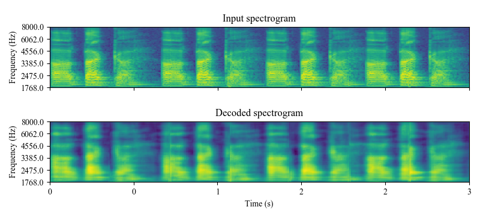
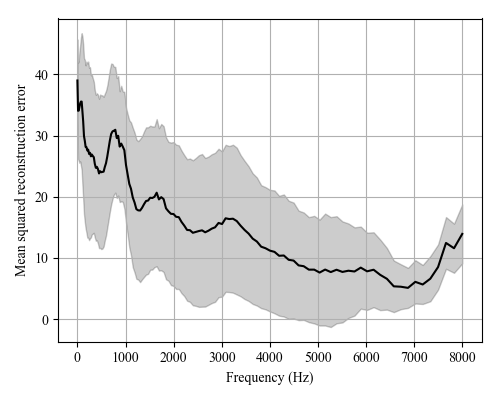

Representation learning features¶
 {kind=link}
{kind=link}
-
class
replearning.RepLearning(model)¶ Feature extraction from speech signals based on representation learning strategies using convolutional and recurrent autoencoders
Two types of features are computed
- 256 features extracted from the bottleneck layer of the autoencoders
- 128 features based on the MSE between the decoded and input spectrograms of the autoencoder in different frequency regions
Additionally, static (for all utterance) or dynamic (for each 500 ms speech segments) features can be computed: - The static feature vector is formed with 1024 features and contains (384 descriptors) x (4 functionals: mean, std, skewness, kurtosis) - The dynamic feature matrix is formed with the 384 descriptors computed for speech segments with 500ms length and 250ms time-shift - You can choose between features computed from a convolutional or recurrent autoencoder
Script is called as follows
>>> python replearning.py <file_or_folder_audio> <file_features> <static (true or false)> <plots (true or false)> <format (csv, txt, npy, kaldi, torch)> <model (CAE, RAE)>
Examples command line:
>>> python replearning.py "../audios/001_ddk1_PCGITA.wav" "replearningfeaturesDDKst.txt" "true" "true" "txt" "CAE" >>> python replearning.py "../audios/001_ddk1_PCGITA.wav" "replearningfeaturesDDKdyn.pt" "false" "true" "torch" "CAE"
>>> python replearning.py "../audios/" "replearningfeaturesst.txt" "true" "false" "txt" "CAE" >>> python replearning.py "../audios/" "replearningfeaturesst.csv" "true" "false" "csv" "CAE" >>> python replearning.py "../audios/" "replearningfeaturesdyn.pt" "false" "false" "torch" "CAE"
Examples directly in Python
>>> from replearning import RepLearning >>> replearning=RepLearning('CAE') >>> file_audio="../audios/001_a1_PCGITA.wav" >>> features1=replearning.extract_features_file(file_audio, static=True, plots=True, fmt="npy") >>> features2=replearning.extract_features_file(file_audio, static=True, plots=True, fmt="dataframe") >>> features3=replearning.extract_features_file(file_audio, static=False, plots=True, fmt="torch") >>> replearning.extract_features_file(file_audio, static=False, plots=False, fmt="kaldi", kaldi_file="./test")
-
extract_features_file(audio, static=True, plots=False, fmt='npy', kaldi_file='')¶ Extract the representation learning features from an audio file
Parameters: - audio – .wav audio file.
- static – whether to compute and return statistic functionals over the feature matrix, or return the feature matrix computed over frames
- plots – timeshift to extract the features
- fmt – format to return the features (npy, dataframe, torch, kaldi)
- kaldi_file – file to store kaldi features, only valid when fmt==”kaldi”
Returns: features computed from the audio file.
>>> replearning=RepLearning('CAE') >>> file_audio="../audios/001_ddk1_PCGITA.wav" >>> features1=replearning.extract_features_file(file_audio, static=True, plots=True, fmt="npy") >>> features2=replearning.extract_features_file(file_audio, static=True, plots=True, fmt="dataframe") >>> features3=replearning.extract_features_file(file_audio, static=False, plots=True, fmt="torch") >>> replearning.extract_features_file(file_audio, static=False, plots=False, fmt="kaldi", kaldi_file="./test")
>>> replearning=RepLearning('CAE') >>> path_audio="../audios/" >>> features1=replearning.extract_features_path(path_audio, static=True, plots=False, fmt="npy") >>> features2=replearning.extract_features_path(path_audio, static=True, plots=False, fmt="csv") >>> features3=replearning.extract_features_path(path_audio, static=False, plots=True, fmt="torch") >>> replearning.extract_features_path(path_audio, static=False, plots=False, fmt="kaldi", kaldi_file="./test.ark")
-
extract_features_path(path_audio, static=True, plots=False, fmt='npy', kaldi_file='')¶ Extract the representation learning features for audios inside a path
Parameters: - path_audio – directory with (.wav) audio files inside, sampled at 16 kHz
- static – whether to compute and return statistic functionals over the feature matrix, or return the feature matrix computed over frames
- plots – timeshift to extract the features
- fmt – format to return the features (npy, dataframe, torch, kaldi)
- kaldi_file – file to store kaldifeatures, only valid when fmt==”kaldi”
Returns: features computed from the audio file.
>>> replearning=RepLearning('CAE') >>> path_audio="../audios/" >>> features1=phonological.replearning(path_audio, static=True, plots=False, fmt="npy") >>> features2=phonological.replearning(path_audio, static=True, plots=False, fmt="csv") >>> features3=phonological.replearning(path_audio, static=False, plots=True, fmt="torch") >>> replearning.extract_features_path(path_audio, static=False, plots=False, fmt="kaldi", kaldi_file="./test.ark")
Feature extraction from speech signals based on representation learning strategies
-
class
AEspeech.AEspeech(model, units)¶ -
compute_bottleneck_features(wav_file, return_numpy=True)¶ Compute the the bottleneck features of the autoencoder
Parameters: - wav_file – .wav file with a sampling frequency of 16kHz
- return_numpy – return the features in a numpy array (True) or a Pytorch tensor (False)
Returns: Pytorch tensor (nf, h) or numpy array (nf, h) with the extracted features. nf: number of frames, size of the bottleneck space
-
compute_dynamic_features(wav_directory)¶ Compute both the bottleneck and the reconstruction error features from the autoencoder for wav files inside a directory
Parameters: wav_directory – .wav file with a sampling frequency of 16kHz Returns: dictionary with the extracted bottleneck and error features, and with information about which frame coresponds to which wav file in the directory.
-
compute_global_features(wav_directory, stack_feat=False)¶ Compute global features (1 vector per utterance) both for the bottleneck and the reconstruction error features from the autoencoder for wav files inside a directory
Parameters: - wav_directory – .wav file with a sampling frequency of 16kHz
- stack_feat – if True, returns also a feature matrix with the stack of the bottleneck and error features
Returns: pandas dataframes with the bottleneck and error features.
-
compute_rec_error_features(wav_file, return_numpy=True)¶ Compute the reconstruction error features from the autoencoder
Parameters: - wav_file – .wav file with a sampling frequency of 16kHz
- return_numpy – return the features in a numpy array (True) or a Pytorch tensor (False)
Returns: Pytorch tensor (nf, 128) or numpy array (nf, 128) with the extracted features. nf: number of frames
-
compute_rec_spectrogram(wav_file, return_numpy=True)¶ Compute the reconstructed spectrogram from the autoencoder
Parameters: - wav_file – .wav file with a sampling frequency of 16kHz
- return_numpy – return the features in a numpy array (True) or a Pytorch tensor (False)
Returns: Pytorch tensor (N, C, F, T). N: batch of spectrograms extracted every 500ms, C: number of channels (1), F: number of Mel frequencies (128), T: time steps (126)
-
compute_spectrograms(wav_file)¶ Compute the tensor of Mel-scale spectrograms to be used as input for the autoencoders from a wav file
Parameters: wav_file – .wav file with a sampling frequency of 16kHz Returns: Pytorch tensor (N, C, F, T). N: batch of spectrograms extracted every 500ms, C: number of channels (1), F: number of Mel frequencies (128), T: time steps (126)
-
destandard(tensor)¶ destandardize input tensor from the autoencoders
Parameters: tensor – standardized input tensor for the AEs (N, 128,126) Returns: destandardized tensor for the AEs (N, 128,126)
-
plot_spectrograms(wav_file)¶ Figure of the decoded spectrograms by the AEs
Parameters: wav_file – .wav file with a sampling frequency of 16kHz
-
show_spectrograms(spectrograms)¶ Visualization of the computed tensor of Mel-scale spectrograms to be used as input for the autoencoders from a wav file
Parameters: spectrograms – tensor of spectrograms obtained from compute_spectrograms(wav-file)
-
standard(tensor)¶ standardize input tensor for the autoencoders
Parameters: tensor – input tensor for the AEs (N, 128,126) Returns: standardize tensor for the AEs (N, 128,126)
-